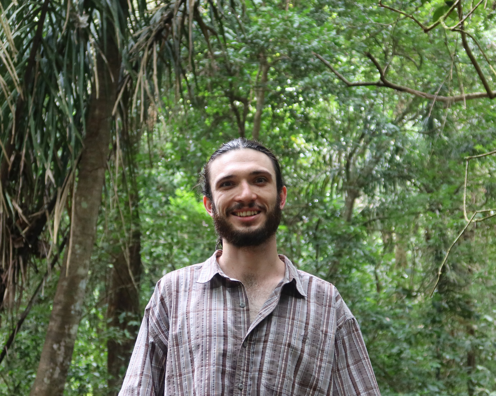

about me
My name is Dr. Caleb Cook Ryan (he/him), and I am currently an Interdisciplinary Postdoctoral Research Fellow in the Center for Animal Behavior Research at the Smithsonian Tropical Research Institute in Panama and a Postdoctoral Fellow in the Department of Ecology and Evolutionary Biology at the University of Tennessee, Knoxville in the USA.
My research broadly focuses on the social behaviour of bats. My work is strongly interdisciplinary, linking approaches from psychology, sociology, and engineering to better understand bat lives. I am broadly interested in integrating technology into wildlife research and using data-driven approaches to expand our understanding of species’ natural histories.
My work has been supported by research grants from the American Museum of Natural History, as well as funding from the Natural Sciences and Engineering Research Council of Canada (NSERC) and the University of Waterloo.
Outside of research, I try to spend as much time as possible outdoors—mountain biking, surfing, running, birding, or sleeping in my hammock.
research
Next-generation Natural History
Using technology to study animal behaviour.
- RFID for individual identification


Individuality and Individual Differences
Understanding among-individual variation that shapes social structure.
- Personality
- In-hand aggressiveness
projects
ongoing collaborations
Long-term Mark Monitoring of Bats in Belize
Large collaboration with scientists from more than 40 institutions and 10 countries. Research supported by AMNH. Project featured by NPR.

Social Structure and Behavioural Dynamics of Fringe-lipped Bats in Panama (2025)
Smithsonian Tropical Research Institute. Research supported by a STRI fellowship and AMNH.
Social Structure and Movement Dynamics of the Jamaican Flower Bat
In collaboration with the University of the West Indies, Bat Conservation International, and York University.
past projects
Long-term RFID Monitoring of Little Brown Bats in Ontario, Canada (2018–2024)
Part of my PhD research. Established a long-term monitoring program around maternity roosts in and around Pinery Provincial Park, in collaboration with Ontario Parks.
Assessing the Population Status of Bats in Eastern Canada (2022–2023)
Capture surveys during summer and swarming, in collaboration with the University of Waterloo and Environment and Climate Change Canada.
outside the lab and field station
fun stuff
Photos from along the way.